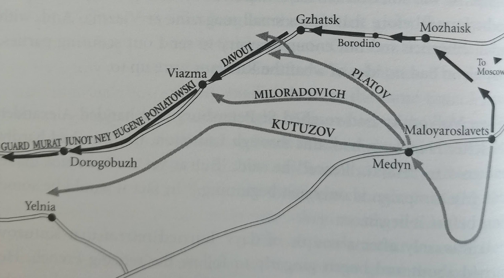
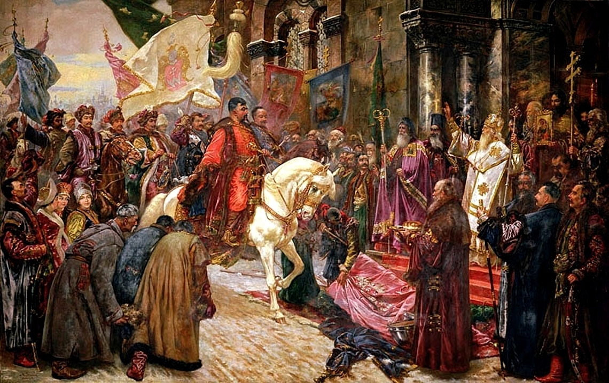
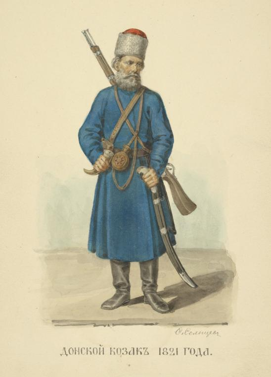
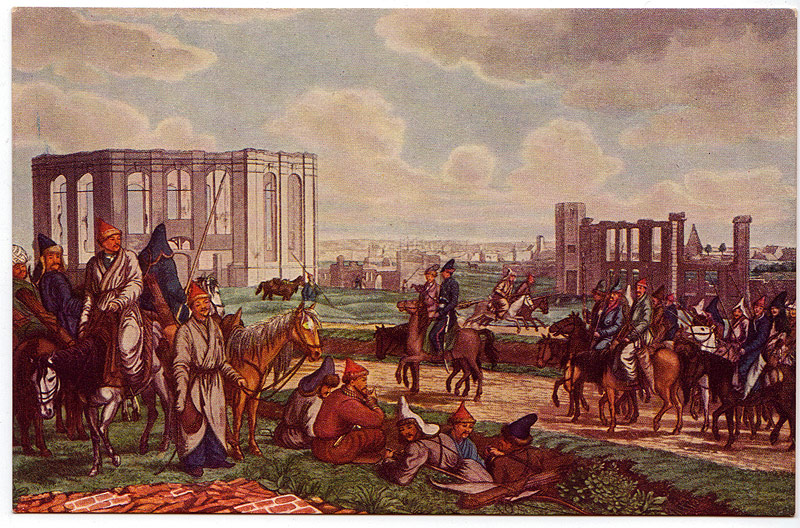
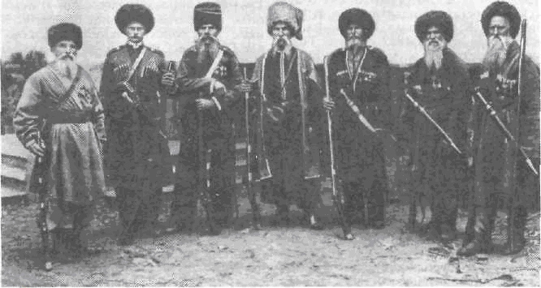

코삭이 온다 !
게시: 2021-06-14T06:30:13+09:00
나폴레옹이 우울하기 짝이 없는 보로디노 벌판을 건너고 있을 때 즈음, 쿠투조프도 비로소 나폴레옹이 남쪽 칼루가가 아니라 정반대 방향인 모즈하이스크로 물러갔다는 것을 파악하고 '뒤로 돌아'를 외쳤습니다. 부하들은 대체 이게 뭐하는 짓인지 모르겠다면서 불만이 가득했지만 아예 추격을 안 하는 것보다는 나으니 다행이라고 생각하며 추격을 서둘렀습니다. 실제로 별로 늦지도 않았습니다. 나폴레옹의 퇴각로는 모즈하이스크를 거쳐 보로디노를 지나 비아즈마(Viazma)를 거치는 등 전체적으로 보면 직선 거리가 아니라 크게 반원호(arc)를 그리는 코스였습니다. 그에 비하면 쿠투조프의 본대는 메드신을 통해 따라잡으면 일종의 지름길을 거쳐갈 수 있는 위치였습니다. 그러나 쿠투조프는 쿠투조프였습니다. 그는 밀로라도비치(Miloradovich)를 선발대로 보내 나폴레옹의 뒤를 밟게 했으나, 정작 자신의 본대는 아주 세월아 네월아 천천히 진격했습니다. 그는 나폴레옹의 뒤를 따라잡아 한판 붙을 생각이 전혀 없어보였습니다. 덕분에 프랑스군의 측면과 후면에 나타나는 러시아군은 100% 코삭 기병들 뿐이었습니다.

(퇴각하는 나폴레옹의 경로와 그 뒤를 쫓는 쿠투조프의 경로입니다. 쿠투조프가 걸어야 하는 경로가 훨씬 짧다는 것을 보실 수 있습니다. 특히 러시아군이 진격하는 일대는 아직 프랑스군에게 약탈당하지 않은 지역이라서 러시아군이 식량을 구하기도 더 쉬웠습니다. Adam Zamoyski의 1812 Napoleon's Fatal March on Moscow에 실린 지도입니다.) 코삭은 대략 지금의 우크라이나 일대인 드네프르(Dnepr, Dnieper) 강과 돈(Don) 강, 쿠반(Kuban) 강 등 흑해 연안 일대에 거주하던 슬라브 계통의 기마 민족이었습니다. 코삭(Cossack, Kozak)이라는 이름 자체가 고대 슬라브어로 '자유인', '모험가'라는 뜻인데, 그 이름처럼 이들은 전통적으로 민주주의적인 자치 사회를 구성하고 살아왔습니다. 이들의 초기 역사에 대해서는 명확하지는 않지만 대략 13세기 이후 몽골족의 침략으로 기존 질서가 무너진 뒤, 슬라브 계통 사람들이 자유를 찾아 흑해 연안 초원 지역으로 찾아들면서 시작되었다고 합니다. 이들은 우크라이나까지 세력을 뻗친 당대 강국인 폴란드-리투아니아 연방의 통치 하에 들어갔으나, 16세기 경 그 지배에 반발하여 반란을 일으킨 뒤 독립을 쟁취하고 자치국을 건설하기도 했습니다. 이들은 기본적으로 이렇게 농노가 아닌 자유민 신분이었고 기마 민족이라는 특성상 군사적 가치가 컸기 때문에 러시아 로마노프 왕조도 이들을 나름대로 특별히 대우했습니다. 즉, 짜르를 위한 기병 병력을 제공하는 대신 자유민의 신분을 계속 유지할 수 있었던 것입니다. 그러나 그런 병역 의무와 수탈에 반발하는 반란이 일어나면 러시아 제국은 이들을 철저하게 짓밟았습니다. 대표적인 사례가 푸쉬킨의 소설 '대위의 딸'로 유명해진 18세기 후반 푸가체프(Pugachev)의 반란이었지요.

(17세기 중반 당시 폴란드-리투아니아 연방에 예속되어 있던 우크라이나에 코삭이 주도하는 자치령을 세운 보단 크멜니츠키(Bohdan Khmelnytsky)가 우크라이나의 주도 키에프에 입성하는 모습입니다.) 이렇게 코삭은 언제나 러시아군의 첨병 노릇을 하는 기병의 대명사였습니다만, 전통적인 유럽 국가들의 기병들과는 물론, 러시아 정규 기병대와도 많이 달랐습니다. 베르크(Berg) 창기병 연대의 뒤몽소 대위(Francois Dumonceau)는 직접 목격한 코삭 기병에 대해 이렇게 묘사했습니다. "전혀 통일성이라고는 찾아볼 수 없이 제각각 제멋대로의 복장과 모자 차림이었는데, 공통점은 지저분하고 꾀죄죄하다는 것이었다. 탄 말은 모두 비쩍 말랐고 갈기는 헝클어진 채 전혀 손질이 되지 않았으며 마구라고는 간단한 재갈 외에는 없었다. 이들은 끝에 못 같은 것이 박힌 투박한 긴 막대기로 무장하고는 아무 질서도 없이 떼를 지어 우리 부대 주변을 서성거렸다. 이들은 마치 우글거리는 쥐떼 같았다."

(1821년 돈(Don) 코삭의 모습입니다. 뒤몽소 대위가 묘사한 것과는 달리 나름 점잖은 모습입니다.) 뒤몽소가 본 코삭들의 복장이 제각각인 것은 충분히 이해할 수 있는 일이었습니다. 코삭은 자유의 대가로 러시아군에게 복무할 때, 총기와 탄약, 식량을 제외한 모든 것, 그러니까 말과 마구, 의복과 침구류 등 정말 모든 것을 자비로 마련해야 했기 때문이었습니다. 또 외부인들이 볼 때는 그냥 지저분한 코삭이지만 코삭은 사는 지역에 따라 돈 코삭, 쿠반 코삭 등등 나름대로 족보가 다 달랐습니다. 게다가 코삭들이 사는 지역은 역사적으로 타타르족이 활동하던 지역이라, 킵차크 투르크 계통의 바쉬키르(Bashkir) 등 중앙 아시아 유목민들도 그런 코삭 중에 섞여 있었습니다. 그나마 '긴 막대기'를 들고 다니는 코삭은 얌전한 편이었고, 이런 바쉬키르 기병은 가끔씩 화살을 날려 프랑스군을 깜짝 놀라게 했습니다.

(1813년 함부르크까지 진격한 바쉬키르 기병대의 모습입니다. 바쉬키르는 현재 우랄 산맥 남단에 바쉬코르토스탄(Bashkortostan) 공화국 형태로 러시아 내에 남아있습니다. 바쉬코르토스탄 공화국은 현재 인구 4백만 정도인데, 그 중 정작 바쉬키르는 30% 정도 밖에 안 되고 러시아 계열이 36%에 달합니다.) 뒤몽소가 이들을 지저분한 쥐떼로 취급한 것은 유럽인들의 인종차별적인 오만함에서 비롯된 것이었지만, 실제로도 이들은 프랑스군에게 뭐 저 따위 부대가 다 있나 싶은 인상을 주기에 충분할 정도로 엉망진창으로 행동했습니다. 보로디노 전투에서도 플라토프(Platov) 장군이 이끄는 코삭 기병 5천이 외젠의 제4 군단의 측면을 기습 공격한 일이 있었습니다만, 그들은 이탈리아군의 보병 방진에 대해 돌격할 생각이 1도 없었고 그나마 대포 포탄이 날아오자 사정거리 밖으로 우르르 도망쳐버린 바 있었습니다. 다른 모든 경우에도 코삭들도 똑같이 행동했습니다. 이들은 프랑스군 소부대를 발견하면 온갖 오두방정을 떨며 기세 좋게 돌격해 달려왔지만 그건 어디까지나 겁을 주려는 것 뿐이었습니다. 프랑스군이 당황하지 않고 머스켓 소총을 겨누기만 해도 이들은 허둥지둥 말을 돌려 달아났습니다. 단, 이들에게는 머스켓 소총을 겨냥만 해야지 실제로 발포를 해서는 안되었습니다. 어차피 코삭은 사정거리 안에는 들어오지도 않았으므로 발사된 총알은 십중팔구 빗나갔는데, 빈 총이 된 것을 확인한 코삭은 무자비하게 달려들었기 때문이었습니다. 이렇게 프랑스군이 빈 총이 되거나 또는 처음부터 당황하여 달아나면 코삭은 달아나는 프랑스군의 등에 창을 꽂는 것이 아니라 프랑스군이 버리고 간 수레와 배낭을 뒤지며 약탈에만 열중했습니다.

(19세기 후반 쿠반(Kuban) 코삭의 모습입니다.) 이렇게 코삭들은 군사적으로 전혀 쓸모가 없었습니다. 어떤 프랑스군 병사는 차라리 프랑스 여자애들이 저것들보다는 더 용감하게 싸울거라고 비아냥거렸습니다만, 알고 보면 이건 코삭의 민족 특성이 규율없고 비겁하기 때문이 아니었습니다. 코삭들은 어디까지나 자유의 대가로 마지못해 러시아군에게 봉사하는 것이었기 때문에 짜르나 조국에 대한 충성심 따위는 없었습니다. 이들의 가장 큰 목적은 남의 전쟁에 끼어들어 개죽음하거나 다치는 일 없이 무사히 돌아가는 것이었고, 가능하다면 돌아갈 때 뭔가 전리품이 있으면 더욱 좋았던 것입니다. 코삭의 계급적 특성이 있었기 때문에 이들의 이런 복장 터지는 행동에 대해서도 러시아군 수뇌부는 그저 그러려니 할 뿐 이들에게 군율을 적용할 생각은 하지 않았습니다. 무엇보다, 자율에 의한 자치를 허가 받았으므로 코삭 부대를 지휘하는 것도 러시아 귀족이 아니라 코삭이었기 때문에 코삭 부대의 이런 거동은 그냥 당연한 것으로 받아들여졌습니다.

(보로디노 전투에서 외젠의 제4 군단의 측면에 코삭 기병들을 이끌고 기습적인 돌격을 감행하여 나폴레옹을 머뭇거리게 만든 플라토프(Matvei Platov)입니다. 이 사람도 돈 강 유역에서 태어나 코삭 장교로 경력을 쌓은 코삭입니다. 그는 1814년에 짜르 알렉산드르를 따라 런던에도 동행했고, 거기서 베레스포드(Beresford) 경의 선물로 이 초상화를 받았습니다.)
그러나 이런 코삭들이 맹활약할 때가 왔습니다. 프랑스군은 자신들이 패퇴하고 있다는 것을 알고 있었기에 사기가 저하되어 있었고, 코삭들이 환호를 지르며 달려들면 겁에 질려 우르르 도망치곤 했습니다. 이럴 때 소수라도 시퍼런 칼을 뽑아든 경기병들이 막아선다면 코작들은 굳이 피를 보지 않고 말을 돌려 달아났겠지만, 프랑스군에게는 더 이상 그런 기병이 남아있지 않았습니다. Source : 1812 Napoleon's Fatal March on Moscow by Adam Zamoyski
https://en.wikipedia.org/wiki/Cossacks
https://en.wikipedia.org/wiki/Bohdan_Khmelnytsky
https://en.wikipedia.org/wiki/Bashkirs
https://en.wikipedia.org/wiki/Bashkortostan